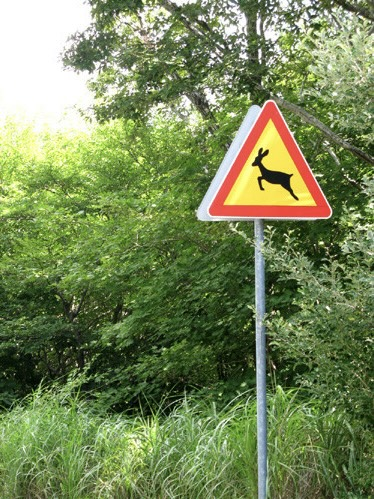
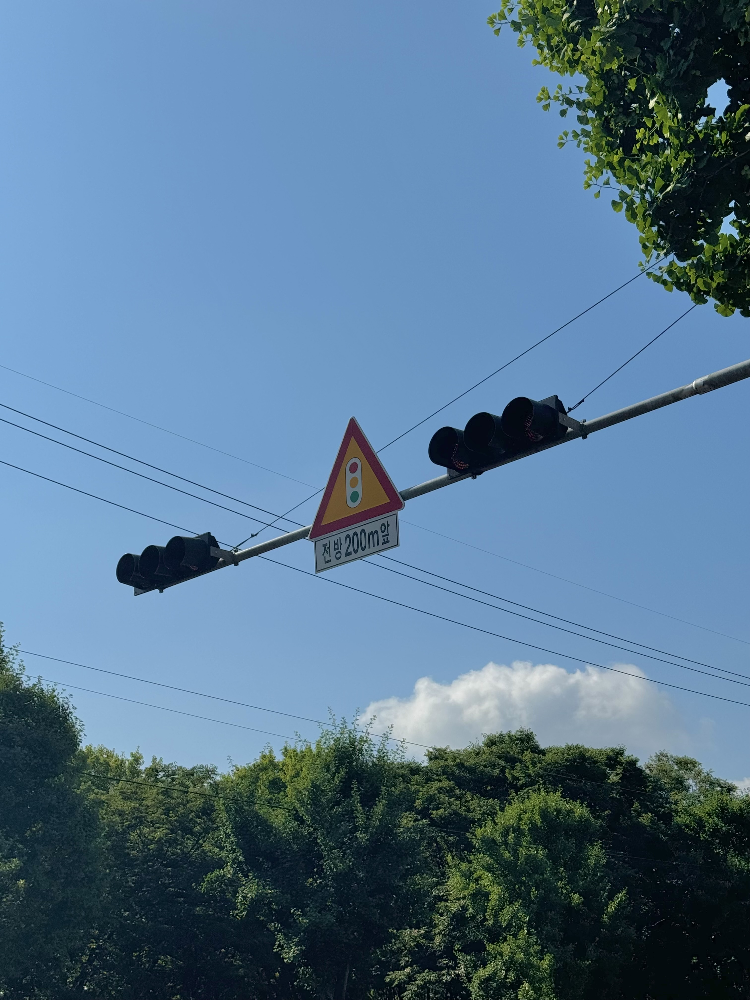
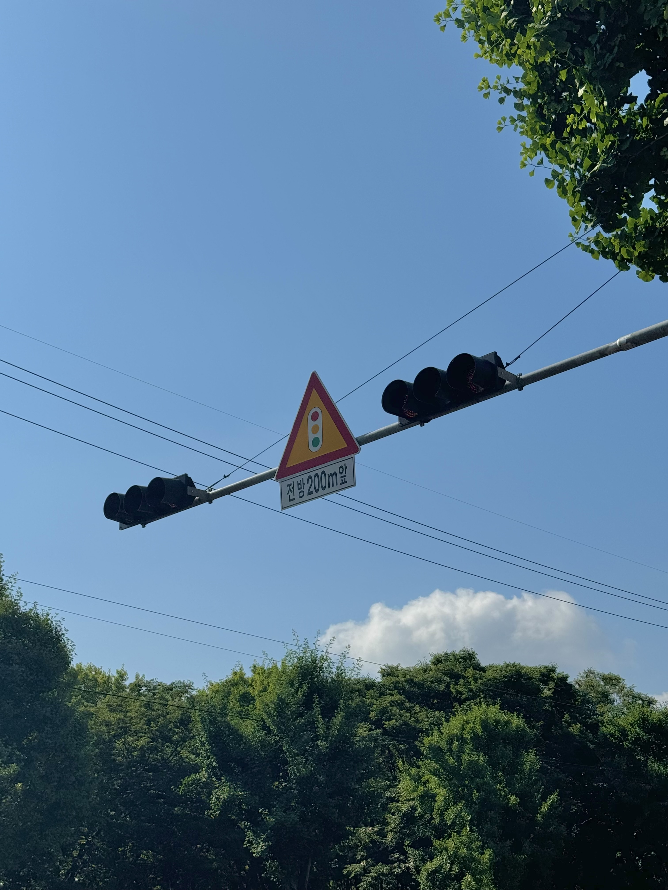
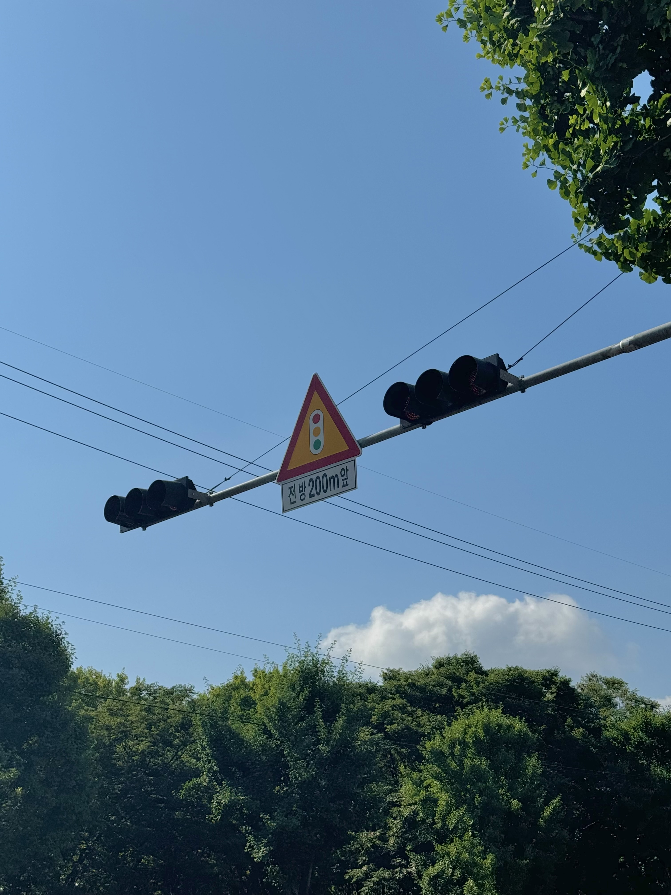

원형의 표지판: 규제 표시로 통행 금지, 주정차 금지, 앞지르기 금지, 좌회전 금지, 서행, 진입 금지 등이 있다. 또, 지시 표시로 우회전, 횡단보도, 어린이 보호, 일방 통행이 있다. 삼각형의 표지판: 주의 표시 (변의 수가 많을 수록 더욱 조심하라는 뜻)이다. 나는 처음에 표지판이 원형과 삼각형인 이유가 단순해서 운전자들이 보기 편하라는 의미인 줄 알았다. 근데 원형과 삼각형 자체에 각각의 의미가 있는 것을 알게 되었다.




 
